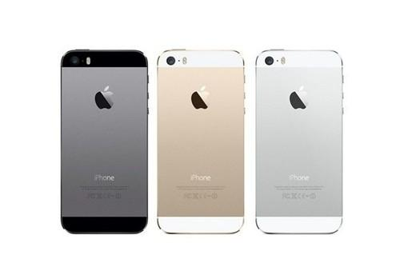

The iPhone 5, a new generation of Apple phones, has a larger screen and a thinner screen. The iPhone 5 features a high-definition retina screen that expands to 4 inches in size with a 16:9 screen ratio, an upgrade from the original 960×640 to 1136×640, and an added line of icons for the same-screen display application. The iPhone 5 is 7.6mm thick, 18 per cent thinner than the previous generation. On the processor side, the iPhone 5 uses Apple's own A6 processor, which includes two CPUs and three GPUs, twice as much performance as the A5 processor, thanks to a more advanced process. The iPhone 5 is equipped with the iOS 6 operating system, and iOS provides a powerful and easy, all-in-one experience that's a great business platform. Thanks to the combination of hardware and software beads, the iPhone's unique features can be vividly presented in a fascinating way. And a powerful iOS platform provides a secure foundation to power your business anywhere, anytime. The iPhone 5 features a newly designed EarPods headset that enhances wear comfort and sound, and its camera optimizes shooting speed and image quality to take 240-degree panoramic photos, replacing the previous 30-pin interface with a new Lighting interface.
Apple's iPhone 5s continues the classic design of the last generation of the iPhone 5. But in order to differentiate, the Home key part, removed the small square in the middle, the whole look very flat, the material also uses a strong sapphire glass design. The outer side of the Home key has an inductive halo that can be used to wake up fingerprint recognition. The iPhone 5s also features a dark grey, silver and champagne gold version of the body. In terms of size, the iPhone 5s measure 123.8mm (length, width, thickness×58.6mm ×7.6mm and weigh 112g, in line with the previous iPhone 5. On the screen, Apple's iPhone 5s feature a 4.0-inch Multi-Touch display with a Retina Display. The resolution is 1136 × 640 and the pixel density is 326 PPI. Unlike the carbon black and silver color designs of the iPhone in the past. The iPhone 5s also comes with a silver-white version, but the original carbon-black version has been removed, with gold and deep-space gray versions added, and the iPhone 5s' coloring process is still the anode alumina coloring process used on the iPhone 5, creating nanoscale micro-holes on the surface of alumina that electrolyte metal particles into the micro-holes and then close the micro-holes through a water bath. The advantage is that the strength of the aluminum alloy is increased while different colors are obtained, and the coloring particles sealed inside do not lose color easily. However, the disadvantage is that the cost is high, and the second is that there are very few colors to choose from. And the darker the color, the worse the stability, black theory (coloring) is the most difficult one. So the iPhone 5s are dark gray instead of black. The reason should be that gray relative to black, coloring difficulty is not so high, better stability, not too easy to color. 